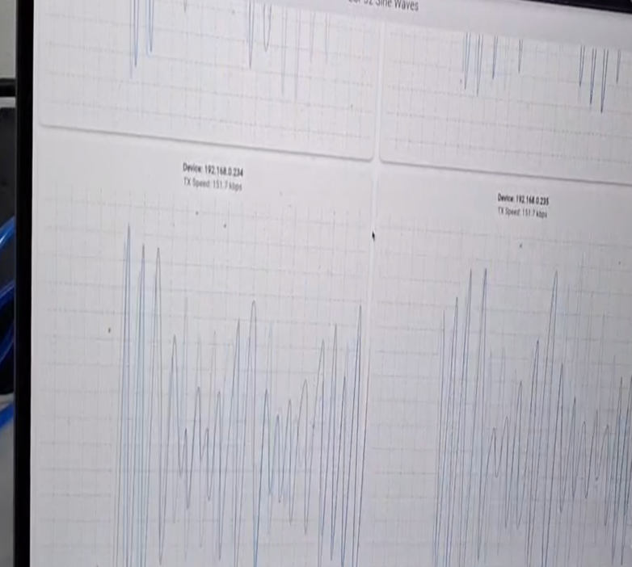
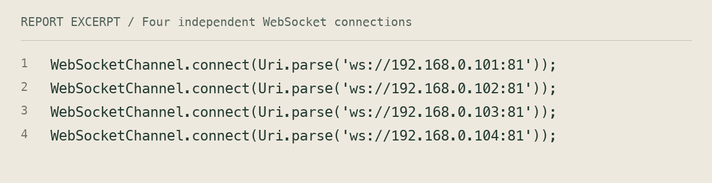

Four ESP32s + W5500
Four ESP32 boards, each connected through W5500 Ethernet, stream generated waveforms into one Flutter dashboard. Independent connections, four graph panels, and per-device recording.


Four independent data streams
Built a Flutter visualizer supporting four ESP32 boards with W5500 Ethernet modules. Each board runs its own WebSocket server on port 81 and streams mathematically generated sine-wave data to a separate graph.
My contribution
Maintained four independent WebSocketChannel instances with separate listeners, editable device IPs, connection status, and a CustomPainter graph per ESP32. Added per-device recording and clipboard-based CSV export. Generated waveforms exercise communication and visualization; they are not measured sensor signals.
Another four-board experiment
The report also documents four ESP32 boards and four W5500 modules arranged as three senders and one receiver. Sender IDs determine priority, with ESP1 ranked above ESP2 and ESP3.
Report evidence
The report documents the four-channel dashboard and records successful sender connections and priority-based acceptance/rejection in the separate messaging experiment. It does not establish hardware clock synchronization, fault-tolerant failover, or a validated latency benchmark.
A closer look

Inside the code
SOURCE SNAPSHOTS
Read accessible code text
WebSocketChannel.connect(Uri.parse('ws://192.168.0.101:81'));
WebSocketChannel.connect(Uri.parse('ws://192.168.0.102:81'));
WebSocketChannel.connect(Uri.parse('ws://192.168.0.103:81'));
WebSocketChannel.connect(Uri.parse('ws://192.168.0.104:81'));